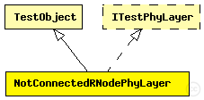

This documentation is released under the Creative Commons license
This documentation is released under the Creative Commons licensePhysical layer test object which expects not to receive broadcasts (bacause of missing connectivity).
The following diagram shows usage relationships between types. Unresolved types are missing from the diagram. Click here to see the full picture.
The following diagram shows inheritance relationships for this type. Unresolved types are missing from the diagram. Click here to see the full picture.
| Name | Type | Description |
|---|---|---|
| TestObject | simple module |
Basis definition for all test objects. |
| Name | Type | Default value | Description |
|---|---|---|---|
| usePropagationDelay | bool | false |
no transmission delay |
| Name | Value | Description |
|---|---|---|
| class | NotConnectedRNodePhyLayer |
| Name | Direction | Size | Description |
|---|---|---|---|
| radioIn | input |
for sendDirect |
// Physical layer test object which expects not to receive // broadcasts (bacause of missing connectivity). simple NotConnectedRNodePhyLayer extends TestObject like ITestPhyLayer { parameters: @class(NotConnectedRNodePhyLayer); bool usePropagationDelay = false; // no transmission delay gates: input radioIn; // for sendDirect }
This documentation is released under the Creative Commons license